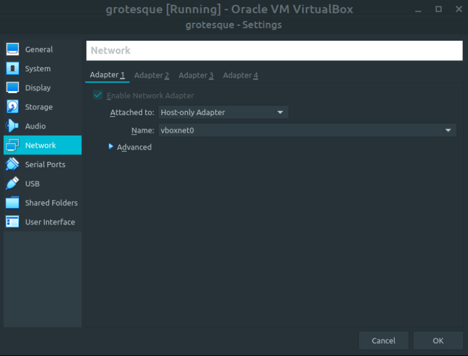
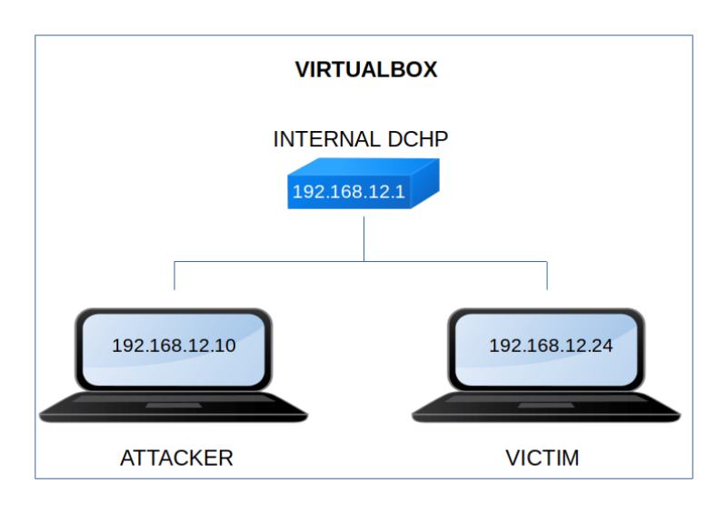

Grotesque 1.0.1
▸ Grotesque 1.0.1
▸ 1. Scan Network
▸ 2. Finding Services and Ports
▸ 3. Enumerate
▸ 3.1 Wpscan
▸ 3.2 Decoding text
▸ 4. Explotiation
▸ 4.1 Log in Wordpress
▸ 4.2 Creating a reverse shell
▸ 4.3 Getting Wordpress Database User crecentials
▸ 4.4 Log in as "raphael" (First flag)
▸ 4.5 Cracking a "keepass db" file
▸ 5. Privilege Escalation
▸ 5.1 Keeweb
▸ 5.2 Getting the second flag
Difficulty: Medium.
Flag: 2 flags.
Learning:
• Reconnaissance
Scan Network
Finding services
• Enumerate
Wpsan
Decoding test
• Exploitation
Login Wordpress
Create a Reverse Shell
Get Wordpress Database User
Crack “keepass.db”
• Privilege Escalation
Get passwords with Keeweb
Get root shell
• Download (Mirror): https://download.vulnhub.com/grotesque/grotesque_vh-1.0.1.ova
• Download (Torrent): https://download.vulnhub.com/grotesque/grotesque_vh-1.0.1.ova.torrent
Install the machine on VirtualBox:
1. Download the file.
2. On Virtualbox choose File->Import Appliance.
3. Select the file “ova”.
4. Accept to import.


Watch your Machine IP.
$ ifconfig
Output:

Diagram
